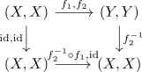
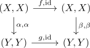
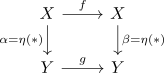

natural equivalence between groupoids of functor category and 2-pullback
Proposition
Let $\mathbb{Z}$ be the additive group, $B \mathbb{Z}$ the categorification and $G$ a groupoid.
Then there exists a natural equivalence between the functor category $\mathrm{Fun}(B \mathbb{Z}, \mathcal{G}) \cong \mathcal{G} \times_{\mathcal{G} \times \mathcal{G}} \mathcal{G}$ for the 2-categorical pullback of

for the product category
Proof
We construct a functor
functorality
identity
follows from $\mathrm{id}(A) = \mathrm{id}_{A}$
composition
follows from the composition of natural transformations as natural transformation
essentially surjective
Let $(X,Y,(f_1,f_2)) \in \mathrm{Ob}(\mathcal{G} \times \mathcal{G} & \arrow[swap]{l}{\Delta} \mathcal{G})$. Let $f_2^{-1} \circ f_1: X \rightarrow X$ be the composition of those isomorphisms.
Consider
Then we choose $(\mathrm{id}, f_2^{-1})$

faithful
follows from construction, as a natural transformation is defined by $\eta(*)$
full
Let $X,Y \in \mathcal{G}$ with $f: X \rightarrow X$ and $g: Y \rightarrow Y$ be isomorphisms, designated by $\mathrm{Fun}(B \mathbb{Z}, \mathcal{G})$ and $(\alpha, \beta)$ be a morphism

Then
Furthermore, we define
and by assumption,

commutes, hence $\eta$ is a welldefined morphism in $\mathrm{Fun}(B \mathbb{Z}, \mathcal{G})$